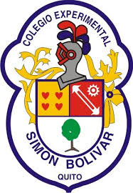
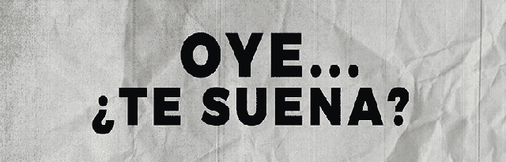

UNIDAD EDUCATIVA FISCAL "SIMÓN BOLÍVAR"
PROYECTO DEMOSTRATIVO PARA ESTUDIANTES DE TERCERO DE BACHILLERATO TÉCNICO
VIOLENCIA DE GÉNERO
Inicio
Introduccion
Objetivo General
Objetivos Específicos
Concepto y Categoría de Análisis
Patriarcado
Sistema sexo-género,roles y estereotipos
Socialización del género
Construcción de la masculinidad
Diversidades sexo genéricas
Discriminación basada en el género
Sexismo
Machismo
Androcentrismo
El Feminismo y Teoría de Género
Feminismo
Construcción de Igualdad de Genero
Igualdad y Equidad de Género
Testiminios
Por parte de una Mujer
Por parte de un Hombre
.

.